enuSpace-Meta Web 사용 방법
데이터 연동
enuSpace-Meta 제작 편집기에서 생성한 테이블의 데이터를 연동한다.
1.우측 상단 Repository를 눌러 새 프로젝트를 생성 해 편집기 화면으로 이동합니다.
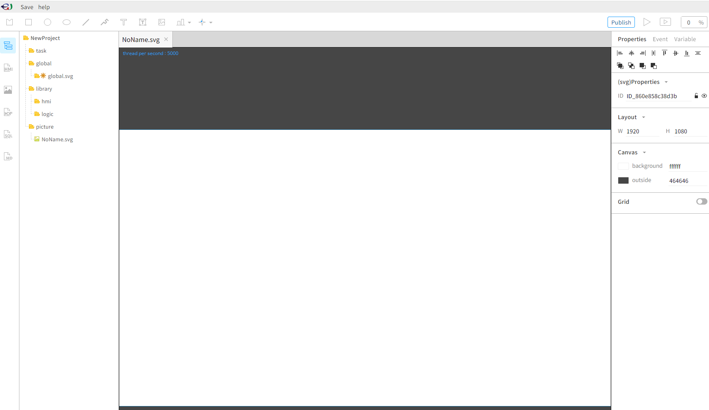
2.좌측 global - New Interface DB를 등록합니다. 이후 생성된 global_0.svg 클릭 후 Add Interface Itme을 클릭합니다.

3.테이블과 태그 생성이 잘 되었다면, 여기서 확인할 수 있습니다. 1번에서 테이블 선택 후, 2번에서 사용할 태그들을 선택 하고 Accept버튼을 누릅니다.
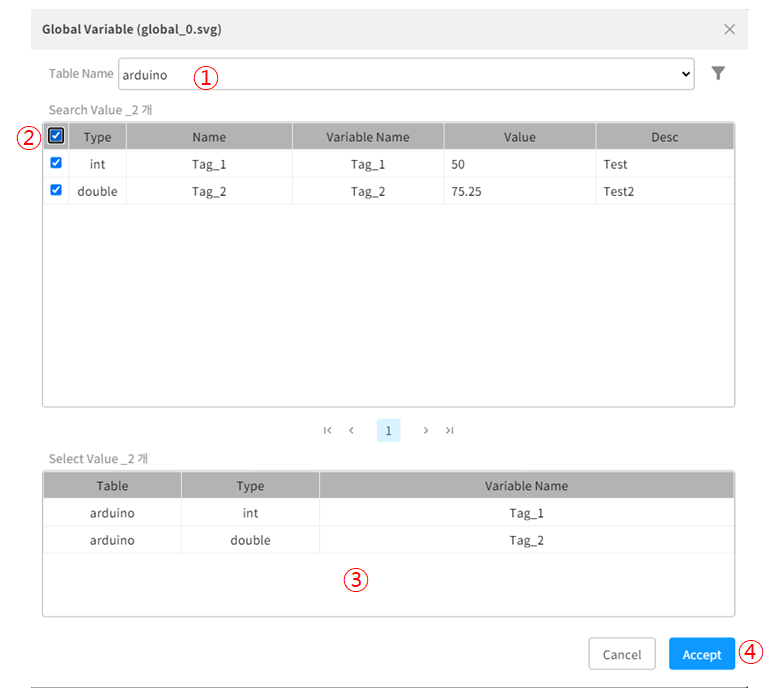
4.3번의 과정이 성공적으로 수행되었다면 좌측 Struct_arduino arduino라는 구조체를 확인할 수 있고, 확인하면 태그가 잘 담겨있는 모습을 볼 수 있습니다. 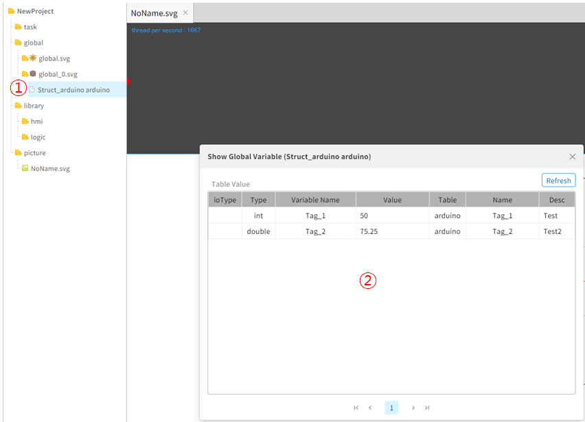
데이터 가시화
enuSpace-Meta 제작 편집기에서 연동한 데이터를 가시화할 수 있다.
본 예제에서는 차트와 텍스트를 통해 데이터를 가시화하는 예제를 설명합니다.
차트
1.다음의 순서를 따라 차트를 생성합니다.
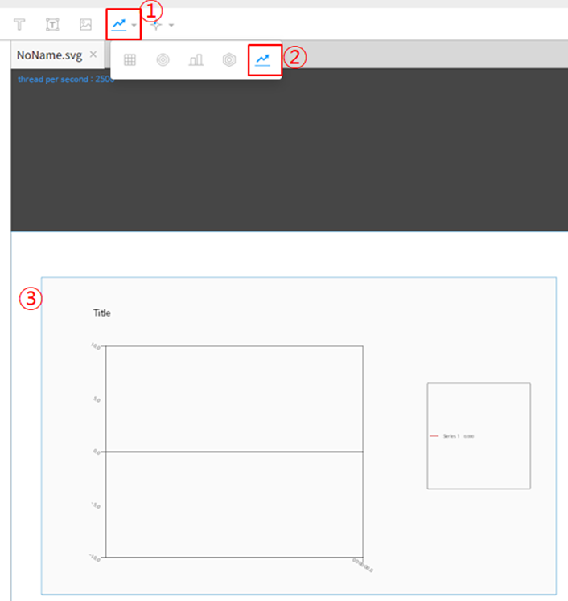
①,② 클릭 후 ③ 드래그
2.차트 클릭 후 우측 Properties - SeriseLine1을 클릭합니다.

3.우측 variable 내용에 #table.Tag 형식의 변수를 작성합니다.
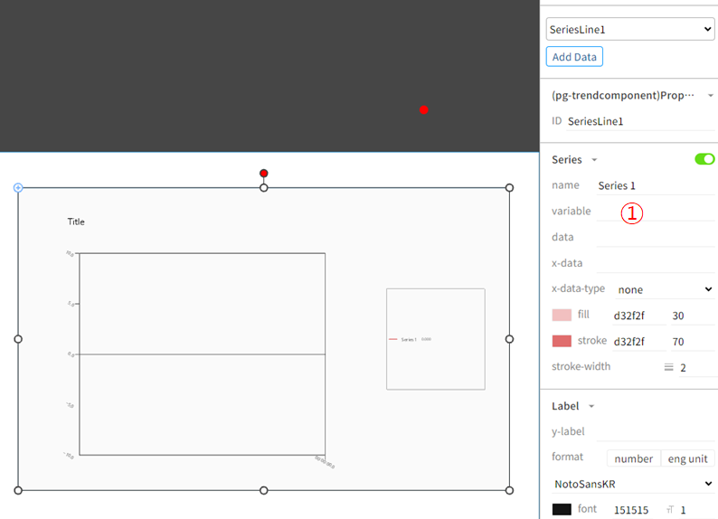
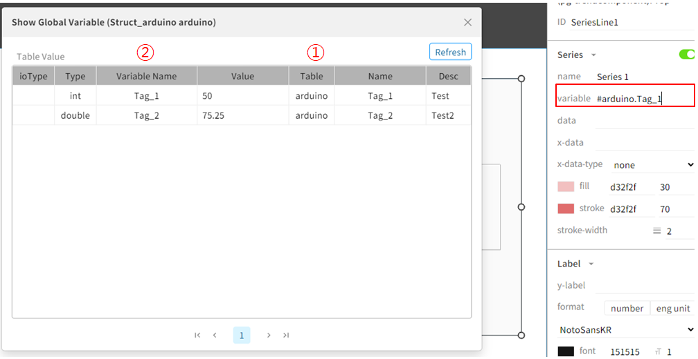
예를 들어 가시화 할 Table이 arduino 이고 태그의 Variable_Name이 Tag_1이라면 #arduino.Tag_1 이라고 작성하면 됩니다.
4.추가를 원하면 그림의 Add Data를 클릭합니다.
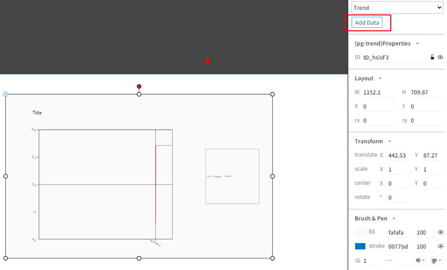

추가하는 태그도 마찬가지로, #arduino.Tag_2 라고 작성합니다.
</br> 5.이후 프로젝트를 실행하면 연동된 데이터의 흐름을 확인할 수 있습니다.
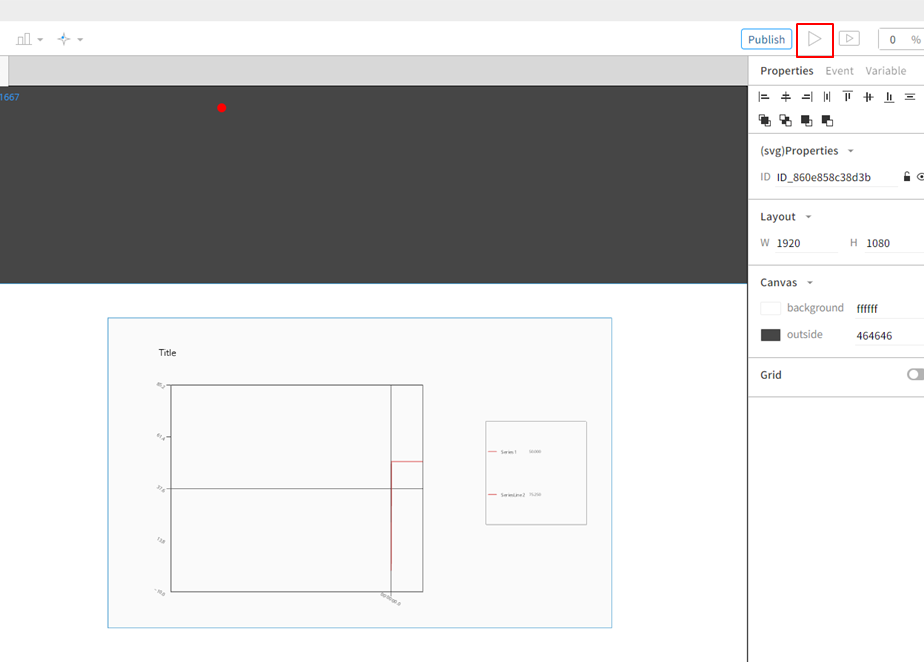

텍스트
1.프로젝트 좌측 상단 T 버튼을 눌러 텍스트 박스 객체를 생성합니다. 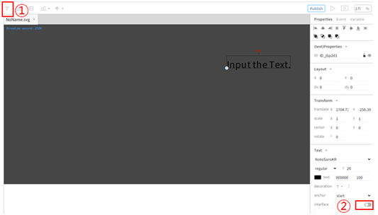
2.interface를 활성화 하고, variable 영역에 차트와 동일하게 #Table.Tag를 작성하면 됩니다. 
3.이후 실행시 해당 텍스트는 태그의 Value가 출력됩니다.
데이터 쓰기
enuSpace-Meta 제작 편집기에서 연동한 데이터의 값을 DB에 쓸 수 있다.
한 사각형 객체를 클릭할 때마다 데이터가 10씩 감소되는 예시와 사용자가 입력한 값으로 데이터가 수정되는 예시를 설명한다.
클릭시 10씩 감소
1.사각형 객체를 생성하고 onClick 이벤트 등록을 진행합니다.
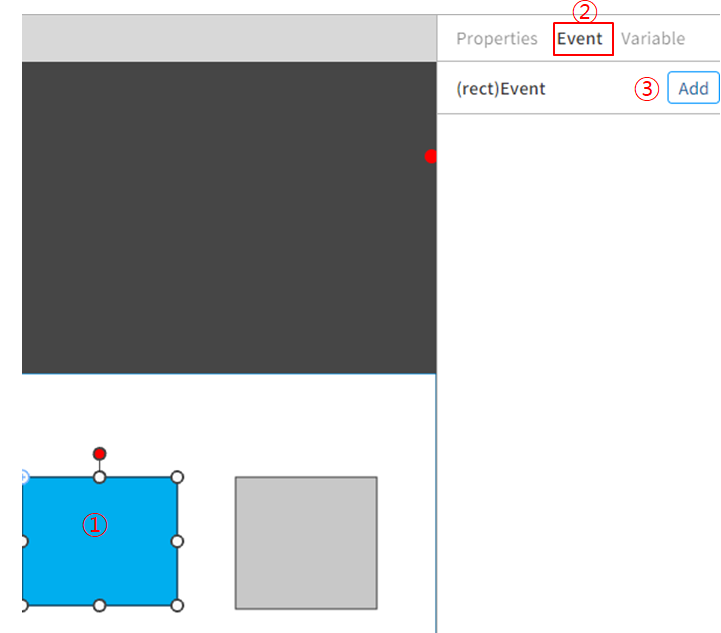
2.onClick 이벤트 등록 스크립트는 다음 그림과 같이 작성합니다.
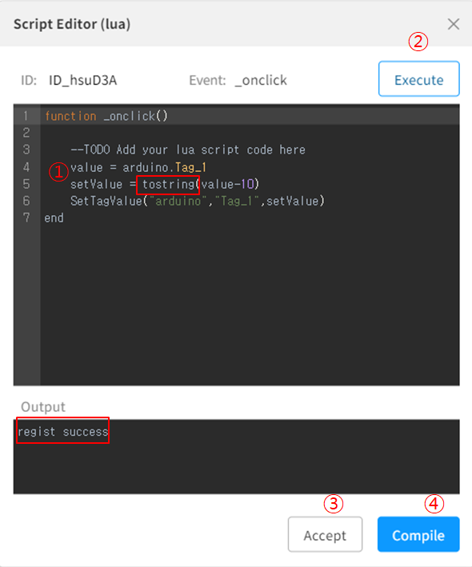
value = arduino.Tag_1 ( Table.Tag => variable에 작성했던 부분에서 #만 제거) value라는 변수에 현재 arduino 테이블의 Tag_1 값을 담습니다.
데이터를 쓰는 SetTagValue함수는 String 형식의 데이터를 보내야하기 때문에 tostring을 통해 String 형식으로 변경합니다.
SetTagValue Params (“테이블명”,”태그명”,”값”)
② 즉시 1회 실행 ③ 확인 ④ 컴파일 후 Output창에 문제가 없다면 regist success을 출력한다.
3.이후 프로젝트 실행 후 해당 객체를 클릭 할 때마다 value의 값이 10씩 줄어듭니다.
사용자가 입력한 값으로 데이터 쓰기
1.사용자가 값을 입력할 Input Text Box와 사각형 객체를 생성합니다.
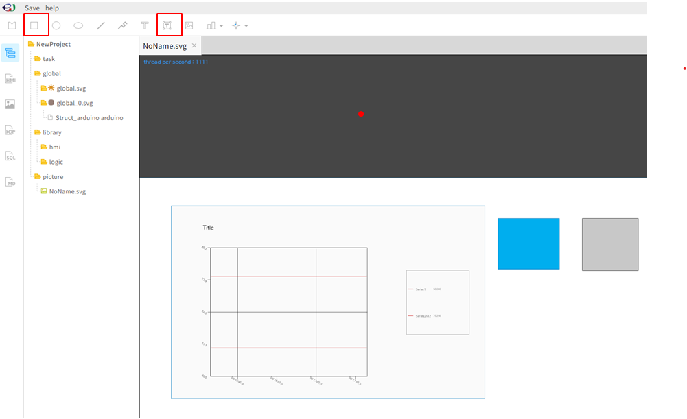
2.Input Text Box의 ID를 value_box로 변경합니다.
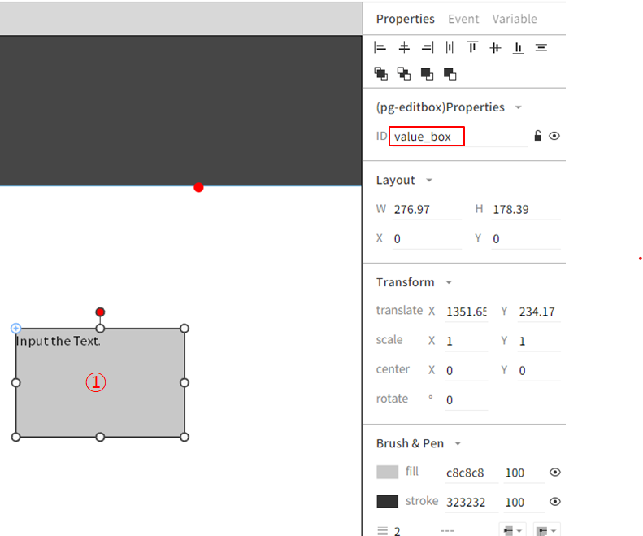
3.사각형 객체에 onClick 이벤트를 등록합니다.
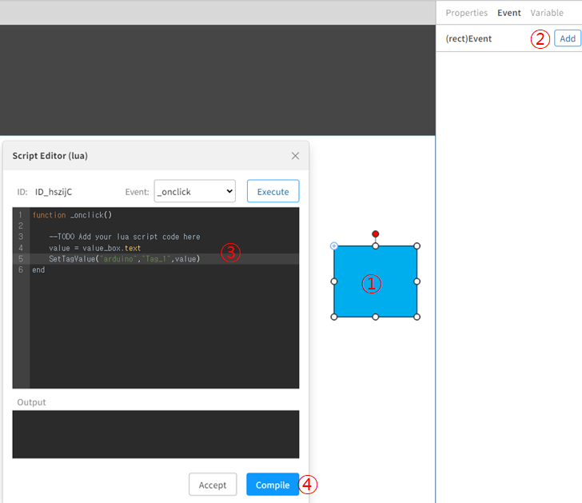
- value = value_box.text ( Input Text Box의 ID.text ) 즉 사용자가 입력한 text입니다.
- SetTagValue Params (“테이블명”,”태그명”,”값”)
4.이후 프로젝트 실행 후 Input Text Box의 사용자가 값을 입력하고, 파란색 사각형 객체를 클릭하면 값이 변경됩니다.